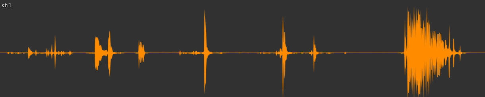

Audio
For audio editing I use audacity, in-engine I use Unity's built in audio system. Actors often require various sound effects to be played simultaneously and sometimes continuously. Because of this it isn't feasible to assign as single AudioSource per actor and rely on PlayOneShot. The actor script handles audio setup by creating various audio sources if they don't already exist, these include sources for: Voices, Sound effects, Weapon sounds and Footsteps.
An audio mixer is used so channels can be assigned to these audio sources so that when adjusting audio settings their volumes respectively change. Each actor has methods to play audio clips either normally or one shot and an audio type enum can be passed to determine the source used, the actor will then check for a free source, otherwise will assign one already playing.